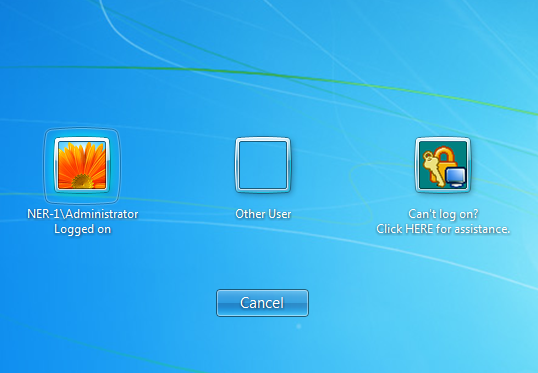
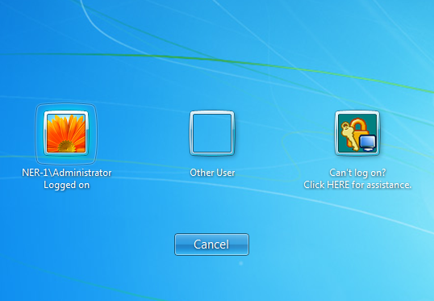

Issues with the XenApp server after the Logon Prompt Extension is installed
Please find the solution in the attached archive. The "standard provider.reg" file should be merged to the registry only on the XenApp5 server (the Logon Prompt should be installed on the XenApp5 server prior to that). The Logon Prompt will now be displayed as a separate logon provider as shown on the screen-shot (also found in the attached archive). 
Please find the solution in the attached archive. The "standard provider.reg" file should be merged to the registry only on the XenApp5 server (the Logon Prompt should be installed on the XenApp5 server prior to that). The Logon Prompt will now be displayed as a separate logon provider as shown on the screen-shot (also found in the attached archive). 